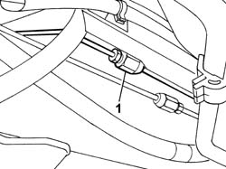
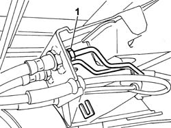
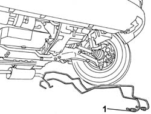

3340B70 RIGID PIPE ONE LEFT OR RIGHT FROM CONNECTOR TO INTERMEDIATE HOSE R R
- Path
- Procedures > 33 BRAKING SYSTEM > 3340 ANTI-LOCK BRAKE SYSTEM (ABS) > 3340B ABS SYSTEM PIPES > 3340B70 RIGID PIPE ONE LEFT OR RIGHT FROM CONNECTOR TO INTERMEDIATE HOSE R R
- Kind
- repair procedure (removal / refitting; the operation number is the code)
- Applies to
- all engines; all production periods
- Interactive page
- https://sloeber94.github.io/elrnDB-fDct/en/#/244001141
Applies to: all engines; all production periods
 Removing
Removing
 Refitting
Refitting- Position the vehicle on the lift.
- Remove the protective cap from the bleed valve on the rear brake caliper.
- Connect the recovery device (pipe and reservoir) to the rear brake caliper bleed valve.
- Operate the brake pedal until the brake/clutch reservoir is drained.
1. Undo the connector for the rigid pipe from the connector to the intermediate flexible pipe.

Applies to: all engines; all production periods
- Release the rigid pipe retaining spring from the connector at the intermediate flexible pipe.
1. Undo the rigid pipe from the connector at the intermediate flexible pipe from the intermediate flexible pipe to the rear brakes.

Applies to: all engines; all production periods
1. Remove the rigid pipe releasing it from the springs.

Applies to: all engines; all production periods
Refitting
Removing- Check that the rigid pipe from the connector to the intermediate flexible pipe is not damaged.
- Fit the rigid pipe from the connector to the intermediate flexible pipe and attach it to the springs.
- Tighten the connector for the rigid pipe from the connector to the intermediate flexible pipe.
 | Value - daNm | Fastening | Component | Ø |
|---|---|---|---|---|
. | (Rigid pipe side) 1.2 - 2.2 | Connector | RIGID PIPE FROM CONNECTOR TO REAR BRAKES | M10 |
- Tighten the connector for the rigid pipe from the connector to the support with the intermediate flexible pipe to the rear brakes.
| Value - daNm | Fastening | Component | Ø |
|---|---|---|---|---|
. | (Support side with intermediate flexible pipe to rear brakes) 1.2 - 2.2 | Connector | RIGID PIPE FROM CONNECTOR TO REAR BRAKES | M10 |
Op. 0010T65 HYDRAULIC BRAKE SYSTEM BLEED AIR
- Remove the vehicle from the lift.
- Test the operation of the braking system.